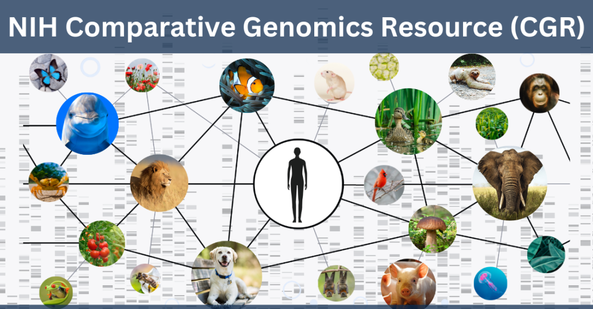
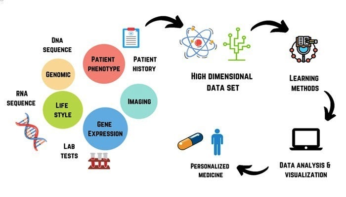

Bioinformatics and Genomics Research
At the Sivasakthi Science Foundation, we are committed to advancing research in the cutting-edge field of bioinformatics, with a particular emphasis on genomics. Our funding priorities under the Emerging Sciences category are strategically aligned to support pioneering research in bioinformatics that can revolutionize our understanding of genomes and propel the life sciences into a new era. We aim to fund innovative projects that bridge the gap between computational analysis and biological discovery, addressing key challenges in the rapidly evolving landscape of genomics.
Focus Areas of Interest
Comparative Genomics
Comparative genomics offers profound insights into the evolutionary relationships between species. Our foundation supports research that seeks to compare the genomes of different organisms, aiming to uncover genetic variations that contribute to species diversity, adaptation, and evolution. We are particularly interested in studies focusing on plant and animal species native to India, contributing to biodiversity conservation and the broader understanding of evolutionary mechanisms.
Functional Genomics
Understanding how genes and non-coding elements of the genome contribute to biological processes is essential for advancing biology and medicine. We are keen on supporting research that utilizes high-throughput technologies to explore gene expression patterns, gene functions, and their regulatory networks. Special emphasis is placed on research addressing gene-environment interactions, which could have profound implications for agriculture and ecosystem management in the context of climate change.
Genomic Data Integration and Interpretation
With the proliferation of genomic datasets, a major challenge lies in integrating diverse types of data (e.g., sequence data, transcriptomics, epigenomics) and deriving meaningful biological insights. We fund projects that develop new bioinformatics tools or methodologies for efficient data integration, analysis, and interpretation. This includes AI and machine learning approaches to extract patterns from complex genomic data, enabling more accurate predictions of gene function and regulatory elements.
AI-Driven Genomic Research
Artificial intelligence (AI) and machine learning (ML) are transforming bioinformatics, particularly in genomics. The Sivasakthi Science Foundation supports projects that explore AI-driven insights into genomics. This includes predictive modeling of gene expression, genome annotation, and identifying genomic signatures of complex traits. We seek proposals that leverage AI to enhance the understanding of genome biology, plasticity, and evolution.
Population Genomics and Evolutionary Studies
Understanding the genetic variation within and between populations provides insights into how species adapt to environmental changes. We are interested in funding population genomics studies that explore genetic diversity, population structure, and adaptive evolution in natural populations. Projects related to climate adaptation, species conservation, and agricultural improvement in India are of particular significance.
Non-coding RNA and Regulatory Genomics
Non-coding regions of the genome play crucial roles in gene regulation, development, and disease. We fund research that investigates the functions of non-coding RNAs (ncRNAs), transcriptional enhancers, and other regulatory elements in genomic function and organismal development. Projects that explore the evolution of regulatory networks and their impact on gene expression are strongly encouraged.
Structural Variants and Genome Stability
Structural variations such as copy number variations, inversions, and translocations can have significant impacts on gene function and phenotype. Our foundation is interested in research that explores the role of structural variants in genome stability, plant and animal breeding, and disease resistance. Innovative bioinformatics tools to detect and analyze structural variations are highly sought after.
Why Bioinformatics and Genomics?
The ever-growing complexity of biological data presents new challenges and opportunities in genomics research. By supporting bioinformatics, we aim to enable breakthroughs in computational methods that can analyze, integrate, and interpret massive genomic datasets. We envision a future where bioinformatics-driven discoveries will unlock the potential for more sustainable agriculture, better environmental stewardship, and enhanced human health. The Emerging Sciences we fund have the potential to shape the future of life sciences, fostering innovative research that will benefit society as a whole.
Our Commitment to Science Innovation
At Sivasakthi Science Foundation, we are deeply committed to fostering innovation in bioinformatics and genomics research. We provide resources to emerging scientists, research institutions, and collaborative projects that push the boundaries of current knowledge. By investing in these frontier areas, we hope to catalyze scientific advancements that address pressing global challenges and drive progress in genomics-based solutions.
For more information on how to apply for funding or to learn more about our ongoing projects, please reach out to us via our contact page.